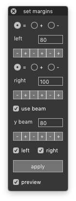

marginsSet¶
-
class
SetMarginsDialog[source]¶ Bases:
hTools3.dialogs.glyphs.base.GlyphsDialogBaseA dialog to set the left/right margins of selected glyphs in the current font.
from hTools3.dialogs.glyphs.marginsSet import SetMarginsDialog SetMarginsDialog()
-
assertGlyph(glyph)[source]¶ Check if the glyph is valid for setting margins under the current settings.
-
beam¶ Toggle the measurement beam on/off.
-
beamY¶ The y-position of the measurement beam.
-
getIntersections(glyph)[source]¶ Get the intersections between a beam at a given y-position and a glyph’s contours.
-
key= 'com.hipertipo.hTools3.dialogs.glyphs.margins'¶
-
left¶ Toggle set left margin on/off.
-
leftMode¶ Current select mode for left margin.
-
leftValue¶ Current spinner value for left margin.
-
modes= ['set equal to', 'increase by', 'decrease by']¶
-
right¶ Toggle set right margin on/off.
-
rightMode¶ Current select mode for right margin.
-
rightValue¶ Current spinner value for right margin.
-
settings= {'leftValue': 100, 'leftMode': 0, 'right': True, 'beamValue': 400, 'rightMode': 0, 'left': True, 'rightValue': 100}¶
-
title= 'set margins'¶
-